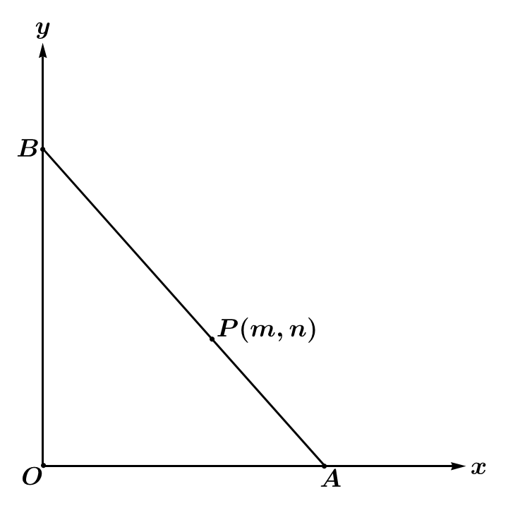
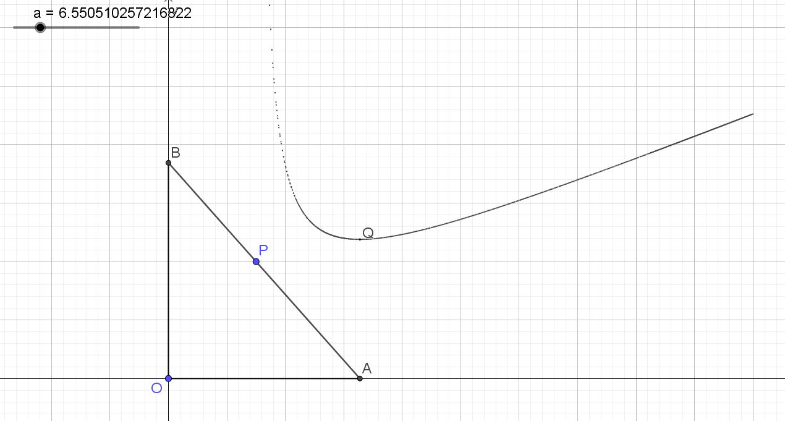

前言
这篇文章最初写于 2021 年 9 月 24 日。2023 年 9 月 24 日初次改写为博文。
过程不太严谨，但一定程度上反映了我的思考。只进行了部分格式修正以适应博文格式，未进行内容的修改。
VSCode 正则表达式转换特殊 markdown 语法「增删」
1
2
| \{~~(.+)~>(.+)~~\}
~~$1~~++$2++
|
问题
如图，已知直线 l:ax+by=1(a,b>0) 过定点 P(m,n) ，其中 m,n>0 ，交 x 轴于 A(a,0) ，交 y 轴于 B(0,b) 。求下列值的最小值：
- OA+OB
- S△OAB
- PA⋅PB
- AB
- C△OAB

由题意得 am+bn=1⇔an+bm=ab
OA+OB
注意到
a+b=(a+b)(am+bn)=m+n+ban+abm⩾m+n+2mn
当 ba=nm 时取得等号
此时 {a=m+mnb=n+mn
即 (OA+OB)min=(a+b)min=m+n+2mn
S△OAB
注意到
ab=ab(am+bn)(am+bn)=2mn+abm2+ban2⩾4mn
当 ba=nm 时取得等号
此时 {a=2mb=2n
即 (S△OAB)min=21ab=2mn
PA⋅PB
注意到
PA⋅PB=[m2+(b−n)2][n2+(a−m)2]⩾[mn+(b−n)(a−m)]2=2mn
当 a=b 时取得等号
此时 {a=m+nb=m+n
即 (PA⋅PB)min=2mn
AB
注意到
a2+b2=(a2+b2)(am+bn)(am+bn)⩾(m32+n32)3
当 ba=3nm 时取得等号
此时 {a=m+3mn2b=n+3m2n
即 ABmin=(a2+b2)min=(m32+n32)23
C△OAB
设 t=ba ，由题意知 b=n+tm
注意到
C(t)=a+b+a2+b2=b(ba+1+b2a2+1)=(n+tm)(t+1+t2+1)
则
C′(t)=t2+1nt+n−t2m−t2t2+1m=t2t2+11(nt3+nt2t2+1−m−mt2+1)
令 C′(t)=0 ，则 nt3+nt2t2+1−m−mt2+1=0
整理得 nt2(t2+1+t)=m(t2+1+1)
设 t=tanθ(θ∈(0,2π))
则
原式⇔ntan2θ(tanθ+secθ)=m(secθ+1)⇔cos3θnsin3θ+cos3θnsin2θ=cosθm+m⇔nsin2θ(sinθ+1)=mcos2θ(cosθ+1)⇔nm=tan2θcosθ+1sinθ+1⇔nm=tan2θ2cos2φ2sinφcosφ+sin2φ+cos2φ⇔nm=tan2θ22tanφ+tan2φ+1⇔n2m=tanθ(tanφ+1)⇔a=t2+1+t−1⇔t=2a+2a2+2a⇔t=n+2mnm+2mn
易见原式有最小值
则当 ba=n+2mnm+2mn 时取得最小值
此时 ⎩⎨⎧a=n+2mn2mn(m+n+2mn)b=m+2mn2mn(m+n+2mn)
重新代回去很难算，我就用软件算了，结果长下面这样，复杂无比，但软件说是最简的：
(C△OAB)min=(2mn+m+n)(2mn+2m2m+2mn+2n2n+2mn[(2mn+m)21+(2mn+n)21])
把 {m=1n=1 代入得 Cmin=4+22 ，是正确的。
把 {m=3n=4 代入得 Cmin=14+46≈23.7979589711327
此时 a=9−6≈6.550510257216822

不是很明显，但我有理由相信它是在最低点。
就这样，Over
2021-10-07 更新：
经过尝试，将原式化简为
(C△OAB)min=2(m+n+2mn)
则当 ba=n+2mnm+2mn 时取得最小值
此时 ⎩⎨⎧a=n+2mn2mn(m+n+2mn)b=m+2mn2mn(m+n+2mn)
可见 Mathematica 也不是万能的。
我试了 FullSimplify 等方法都没能化简，还是靠代入几个根式找规律发现的，因此可能有错误，但画散点图发现差值数量级在 10−16 以上，因此我认为是纯粹机器精度的问题。然后最后自己因式分解得出结果。
然而一开始我找规律找出来的结果是 Cmin=2m2+n2+4mn+2(m+n)2mn ，虽然我眼拙没一下子看出因式分解的方法，但 Mathematica 居然也没做到。。。
最后再找规律，得出结果。
本来想再化简找规律一下 a,b 的
最终找到的规律是发现
⎩⎨⎧a=⎩⎨⎧2m−n1[2m2+(m−n)2mn]x→my→nlim2x−y1[2x2+(x−y)2xy],2m=n,2m=nb=⎩⎨⎧2n−m1[2n2+(n−m)2mn]x→my→nlim2y−x1[2y2+(y−x)2xy],2n=m,2n=m
可以简写成
⎩⎨⎧a=2m−n1[2m2+(m−n)2mn]b=2n−m1[2n2+(n−m)2mn]
可见甚至不如之前的好记，并且还需要多分一类讨论。